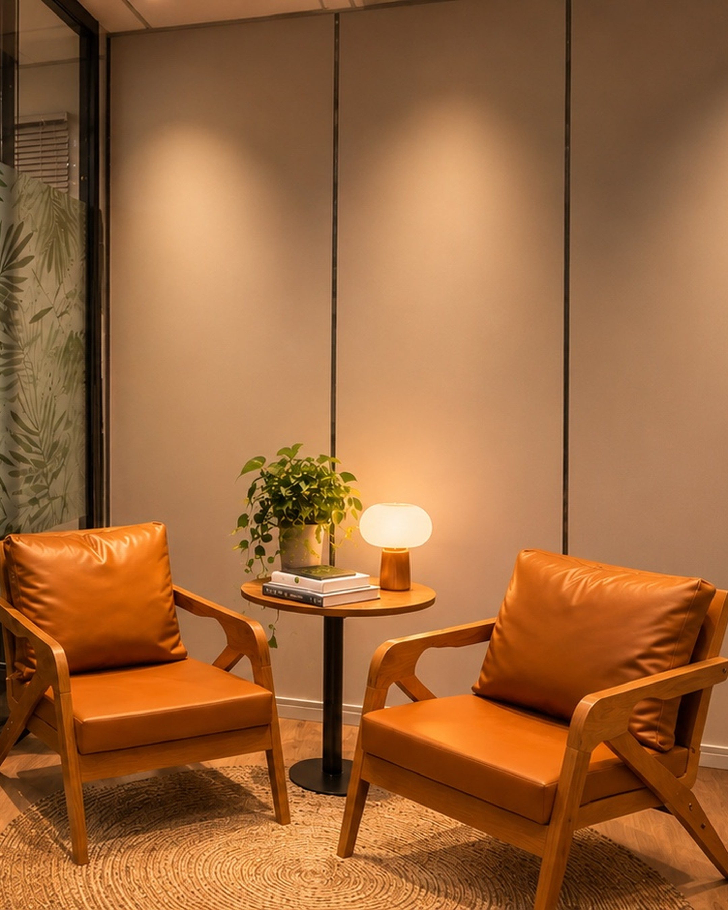

Desde 2009
O Escritório do Cuidado é um espaço de atendimento médico e psicológico dentro da sua empresa. Ele tira do caminho a maior barreira ao cuidado: o tempo e o acesso. A proximidade aumenta a adesão. A adesão gera resultado.